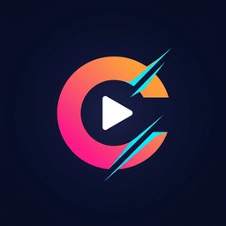

Terms of Service
Last updated: 16 November 2026
- What the tool is. A private tool used only by Cutsilo Clips to prepare and publish short video clips to Cutsilo Clips' own accounts through the platforms' official APIs. It is not offered to the public, and no outside user signs in to it.
- Content. Clips come from our own gameplay or from footage used with the creator's permission. Cutsilo Clips is a fan page and is not affiliated with Rockstar Games, Take-Two Interactive or any game publisher. All game names and trademarks belong to their owners.
- Platform rules. All publishing follows the terms and community guidelines of each platform.
- Removal requests. Rights holders and creators can ask for a clip to be removed by writing to cutsiloclips@gmail.com. We act within 7 days.
- No warranty. The pages and clips are provided as they are.
- Contact. cutsiloclips@gmail.com